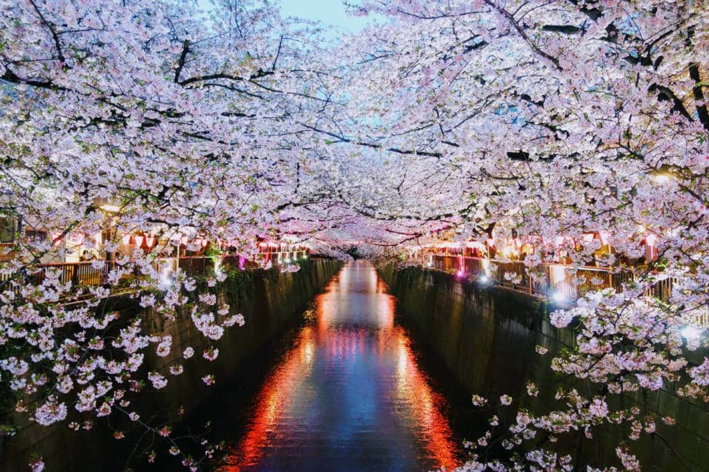
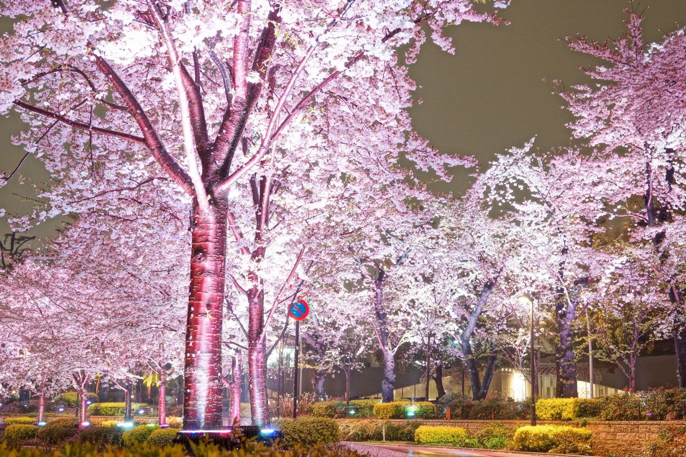

Ueno Cherry Blossom Festival @ Ueno Onshi Park
Ueno Cherry Blossom Festival (うえの桜まつり) is a traditional spring event held at Ueno Onshi Park. There are over 1,200 cherry trees planted at the park site, which flourish beautifully. The park is a popular cherry blossom viewing spot since Edo Period. During the festival period, the light-up of cherry blossoms can be enjoyed at night, and it’s counted as one of three greatest night views of cherry blossoms in Japan.
Bokutei Cherry Blossom Festival @ Sumida Park
Bokutei Cherry Blossom Festival (墨堤さくらまつり) is held at the bank of Sumida River with the 1 km long cherry tree line. It’s very easy to access from Asakusa and Tokyo Skytrees. There will be a special event and numbers of booths offering food, drinks and local souvenirs. The spot is also popular viewing spot at night as beautifully illuminated cherry blossoms can be seen with Sumida River and Tokyo Skytree.

Nakameguro Cherry Blossom Festival
Nakameguro cherry blossom festival is considered one of the best sakura masuri in Tokyo. Meguro River offers some of the best views of cherry blossoms in the city. Cherry trees line both sides of the river and are reflected in its peaceful waters. You can enjoy a walk on the path along the river beneath their spreading boughs.
At night, the illuminations make the whole area shine as the water reflects the lanterns and the trees. You can also purchase food and drink at some of the many stalls along the path. The sight is considered one of the most beautiful places to photograph in the spring in Japan. You can’t miss visiting Nakameguro, if you on a mission taking lots of gorgeous photos in Tokyo.


Chiyoda Cherry Blossom Festival @ Chidorigafuchi
Chiyoda Cherry Blossom Festival (千代田のさくらまつり) is held annually at one of most popular cherry blossom viewing spots in Japan, Chidorigafuchi Park. The park is well known for its picturesque view of the 700 m long walkway and the moat. The popular attraction is riding boats and watching cherry blossoms, which is also available at night.
Midtown Blossom @ Tokyo Midtown
An annual cherry blossom festival, Midtown Blossom is held at the modern city complex building, Tokyo Midtown in Roppongi area. The main attraction of the festival is the 200 m long Sakura avenue, which is lightened up beautifully at night. Enjoy the collaboration of charming cherry blossoms and modern skyscrapers. Roppongi area is located in the heart of Tokyo and very accessible.

Bunkyo Cherry Blossom Festival
Bunkyo Sakura Matsuri is one of Bunkyo’s five flower festivals. Every year when the cherry trees bloom, the local government shuts down the roads on the famous cherry-tree lined Harimazaka Slope and urns the area into a pedestrian festival. Enjoy the trees while grabbing a snack from one of the many food stands.
At night, paper lanterns light up the blooming trees. This is a more low-key and relaxed cherry blossom festival than many others, but it has a unique charm and makes for a leisurely springtime stroll beneath the cherry blossoms.